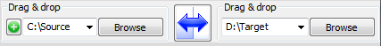
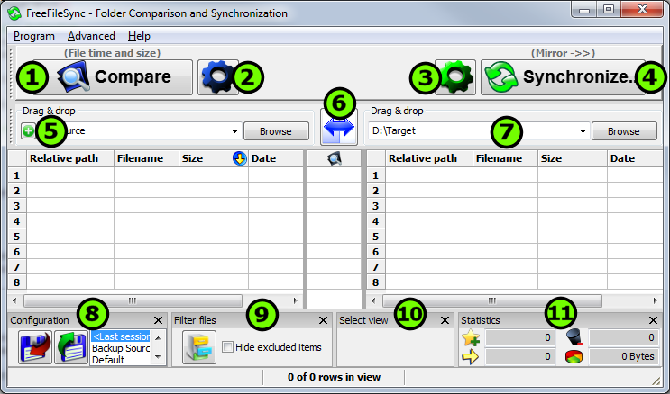
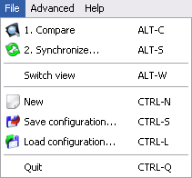
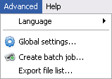
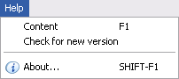

Choose
left and right directories.

"Compare"
them.
Select
synchronization settings.
Press
"Synchronize..."
to begin synchronization.

Start comparison
Specify comparison settings
Set sync configuration
Start synchronization
Add additional folder pairs
Swap sides
Select left and right directories
Save/load configuration
Exclude files
Specify category for display
Synchronization statistics/preview
|
Menu "File"
1. „Comparison Result“ shows a category for each row like „existing on left side only“ or „left file is newer“. 2. „Synchronization Preview“ is the result of the synchronization configuration applied on each category. The effective directions in which the files will be copied are shown.
|
 |
|
Menu "Advanced"
|
 |
|
Menu "Help"
|
 |